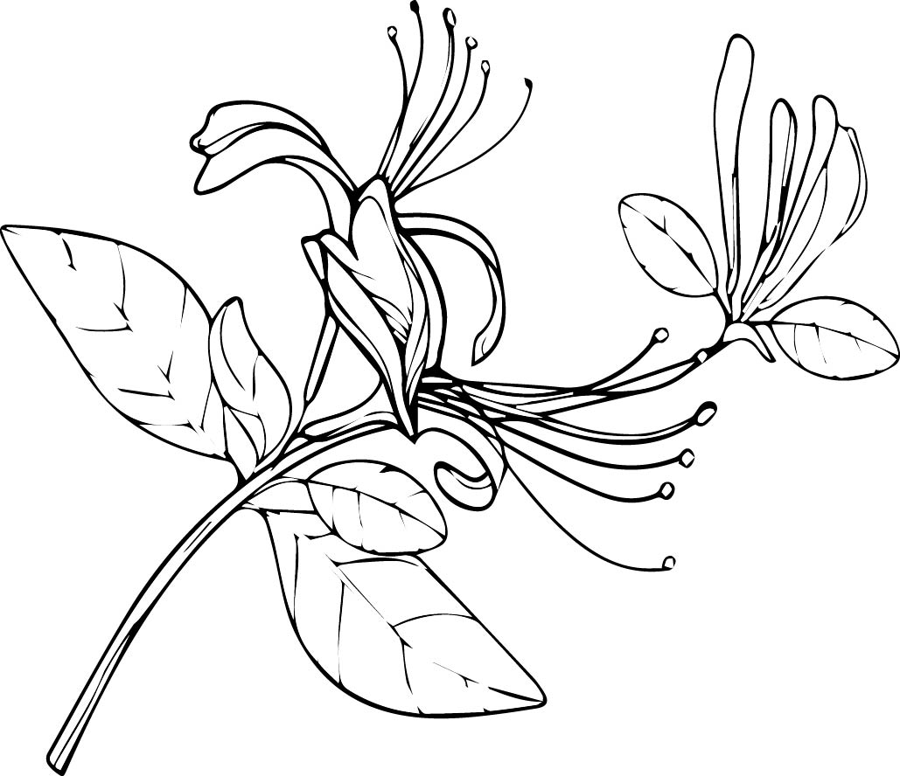
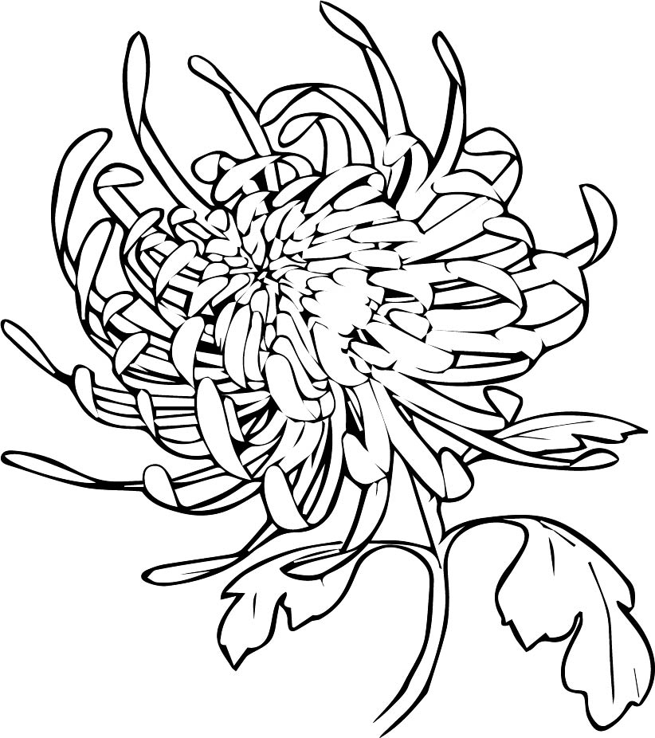
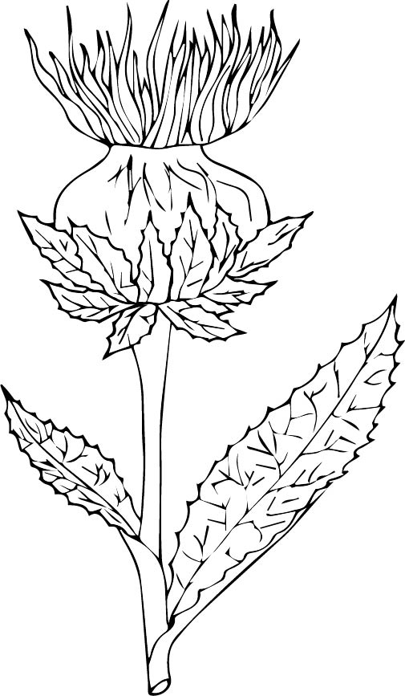

Flowers used in herbal medicine are beneficial and can accurately be used as healing remedies to illnesses and diseases.
A bouquet of flowers is the best gift. Appealing to the eye, alluring fragrances, and guaranteed to cause an emotional impact. Not only are flowers beautiful, but they also carry a significant amount of importance in the world of agriculture and medicine.
In terms of medicine, if the right flower is eaten, its medicinal qualities could potentially heal the sick. Specifically, in Asian traditional medicine, it is believed that herbs, flowers, and plants had healing properties if prepared in a specific manner. Flowers were popularly brewed as teas, eaten whole, or even used to heal physical wounds. These medicinal techniques were carried throughout Asia and were widely used to treat the ill. However, those who practiced these teachings could only speculate that these flowers were the cause of their patient's recovery. Given the lack of scientific equipment and knowledge, it took very long to understand which flowers were beneficial to certain illnesses. However, even with this constant trial and error, it was obvious that flowers had the power to heal. Although a few understood the medicinal properties of plants, more research has been used to understand the beneficial nature of flowers.
One of the most common flowers still used currently are the Japanese Honeysuckle, Chrysanthemum, and the Safflower. These three beautiful flowers have been researched by scientists and have been proven to improve digestion and inflammation, soothe irritated skin, and even reduce the risks of cancer, diabetes, and heart disease.
Commonly found in the streets of Japan, China, Korea, and the United States is Japanese Honeysuckle. The Japanese Honeysuckle, Lonicera japonica, is native to Eastern Asia. This woody vine can grow to 120 feet long and produces a beautiful five petal flower that starts white and fades yellow (Figure 1).
This invasive species can be consumed as tea but can also be eaten as a whole flower. These flowers are known for their sweet nectar that can be sucked directly from the flower’s style. It is a common practice for children to pick these flowers and suck on them as a sweet treat. You can primarily find this flower in Japan and Korea, but it was also introduced to the United States as a popular ornamental flower for their beauty and to also help for erosion control. That is why you may have seen them driving down the highway.
Traditionally, Honeysuckles were used medicinally to cure colds, fevers, and coughs and they helped with inflammation specifically in the throat and skin. It was even sometimes used to cure wound infections. Because of the effectiveness of the flower's healing abilities, they are used today as herbal medicine as well. Though they are used far less today, drinking Japanese Honeysuckle tea or consuming the flowers still have many beneficial qualities. Currently they are still used for colds, the flu, and sore throats. They are even combined with other herbs as a treatment for swine flu and acute bronchitis. More research has shown that Japanese Honeysuckle obtains antiviral, antibacterial, and anti-inflammatory qualities. This is why they are used to treat digestive disorders such as dysentery, upper respiratory tract infections such as pneumonia, and bacterial infections such as encephalitis. Honeysuckle's flavor and healing properties have a long history that proves that the flower’s biology can be healing to humans.
Figure 1
The Chrysanthemum flower, Chrysanthemum morifolium, is a plant that is native to East Asia and popularly grown in China. Chrysanthemums are herbaceous perennial plants that are composed of both ray florets and disc florets (Figure 2).
They are ornamental flowers, culinary flowers and have even been proven to have environmental uses such as reducing indoor air pollution. You can find them at almost any flower shop in flower arrangements because of their beauty and diverse colors. The most popular color of chrysanthemums is yellow. The color yellow symbolizes happiness and optimism which is perfect given the mental health benefits associated with the flower’s tea.
Chrysanthemums have been consumed as tea for thousands of years for its taste and nourishing qualities. It was first consumed in traditional Chinese herbal medicine in the 15th century BC and has since been greatly cultivated. In the past, it was used in numerous forms to treat respiratory issues, irregular blood pressure and to calm the nerves. More research has found that Chrysanthemum flowers are an adaptogenic herb, which means they have the ability to help normalize the body’s experience of stress. This is why it was used traditionally to reduce anxiety, minimizing nerves while also energizing and rejuvenating the brain. Some physical benefits of Chrysanthemum are treating dry irritated eyes, headaches, reducing wrinkles, and improving gut health. It also has preventative properties that reduce the risk of diabetes and cancer. Even if you are not ill, Chrysanthemum tea is packed with vitamins and minerals that are good for you in every circumstance.
Figure 2
Lastly, there is the Safflower, also known as “fake saffron” due to its incredible resemblance with the Crocus flower spice, saffron. Safflower or Carthamus Tinctorius is native to Asia and Africa, specifically from India to the Middle East. It’s a beautiful flower that grows as high as four feet and has flowers ranging from red, yellow, orange, and white (Figure 3).
Unlike the Japanese Honeysuckle and Chrysanthemum, Safflower is primarily used as an oil. Oil can be extracted from the seeds and used as cooking oil. It was also used in India to create paints and dyes because the oil’s transparency allowed for accurate color distribution. Currently, safflower oil is produced in the United States and can commonly be found in specialty food markets. In fact, the United States is where the modern method of pressing safflower seeds for oil started.
Safflower was introduced to China in the 2nd Century BC where its medicinal properties were discovered. Herbalists discovered that the petals of the safflower flower can help promote blood circulation and heal fractures and strains. It was also used to fight dysmenorrhea and postpartum abdominal pain. Because safflower promotes blood flow, it is used to treat menstrual disorders, invigorate circulation, and dissolve clots. Many women use safflower to help regulate their menstrual cycle however it is recommended that women do not use safflower if they are pregnant because it may bring on menstrual periods and cause miscarriages. It is also used today to treat heart disease, joint pain and flat warts. Safflower may also be beneficial for people with elevated blood triglyceride levels with a risk of getting arteriosclerosis, diabetes, and high blood pressure. Though this flower is more pungent than delicious, it contains many medicinal benefits, especially to women.
Figure 3
Although Asian traditional medicine may not always have been beneficial and accurate, there are some herbs and plants they used that could heal patients and that today have even more discovered healing benefits. A flower's physical beauty can be healing to the soul and mind but they can also biologically and scientifically be used as remedies for many illnesses and diseases.
“Chrysanthemum Tea: Health Benefits, Nutrients per Serving, Preparation Information, and More.” WebMD, www.webmd.com/diet/health-benefits-chrysanthemum-tea#:~:text=Chrysanthemum%20tea%20is%20rich%20in,Phosphorous..
“Lonicera Japonica Thunb.: Ethnopharmacology, Phytochemistry and Pharmacology of an Important Traditional Chinese Medicine.” Journal of Ethnopharmacology, www.ncbi.nlm.nih.gov/pmc/articles/PMC7127058/..
“History of Safflower Oil.” Safflower Seed Oil, safflowerseedsoil.org/history-of-safflower-oil/#:~:text=Safflower%20Oil%20History&text=They%20have%20been%20found%20in,minor%20crop%20in%20modern%20times..
“The History and Healing Power of Chrysanthemum.” The-Qi.com, the-qi.com/blogs/journal/the-history-and-healing-power-of-chrysanthemum#:~:text=History%20of%20Chrysanthemum,revered%20by%20poets%20and%20artists..